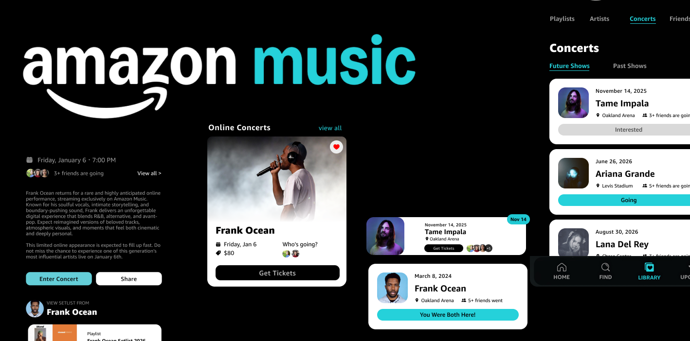
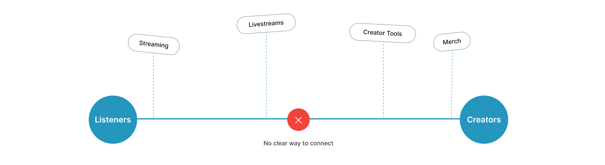
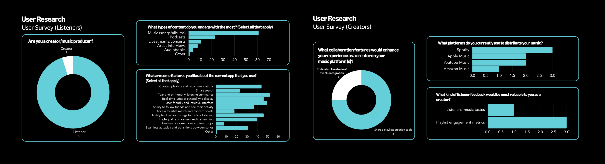
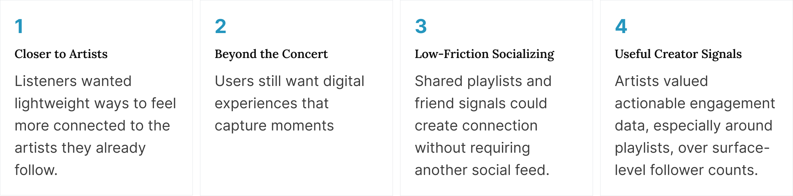
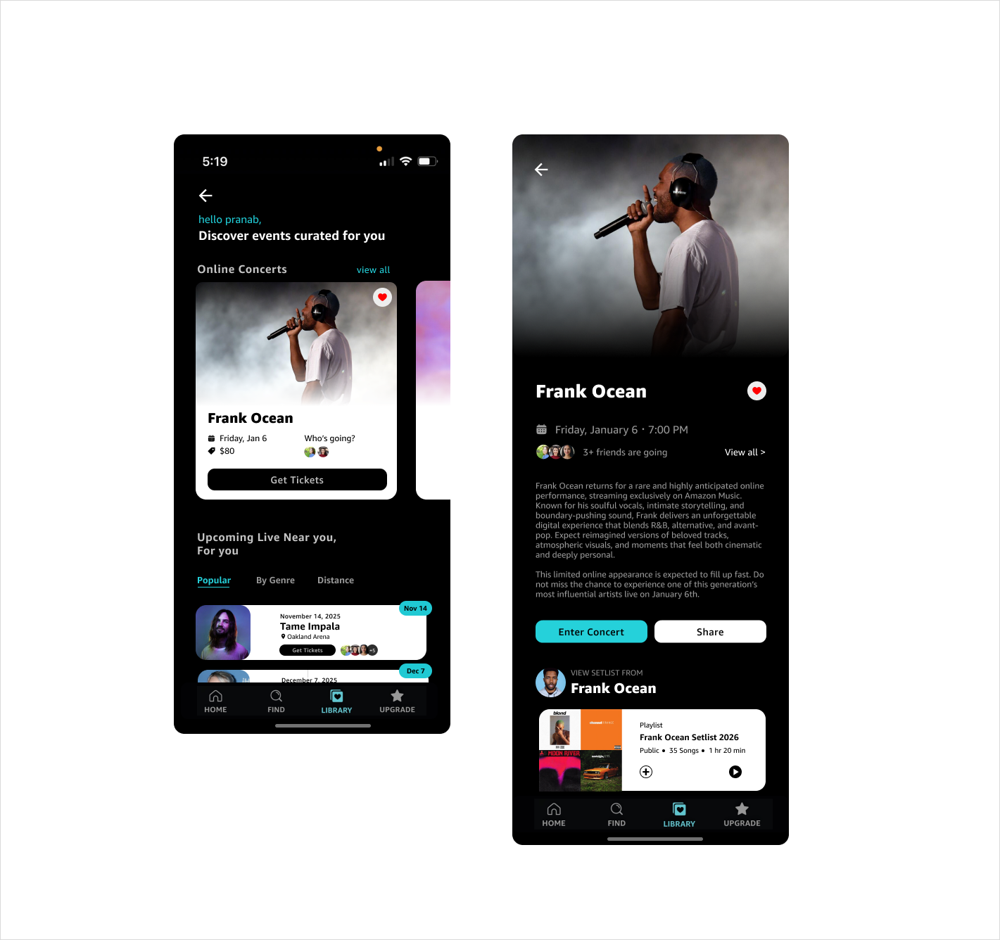
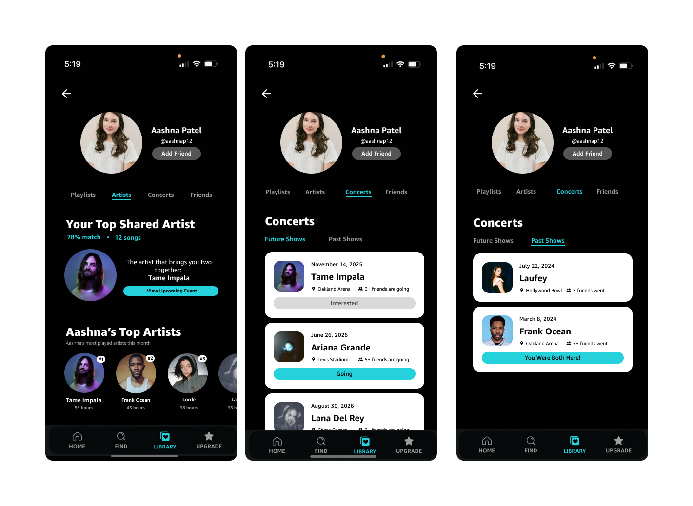
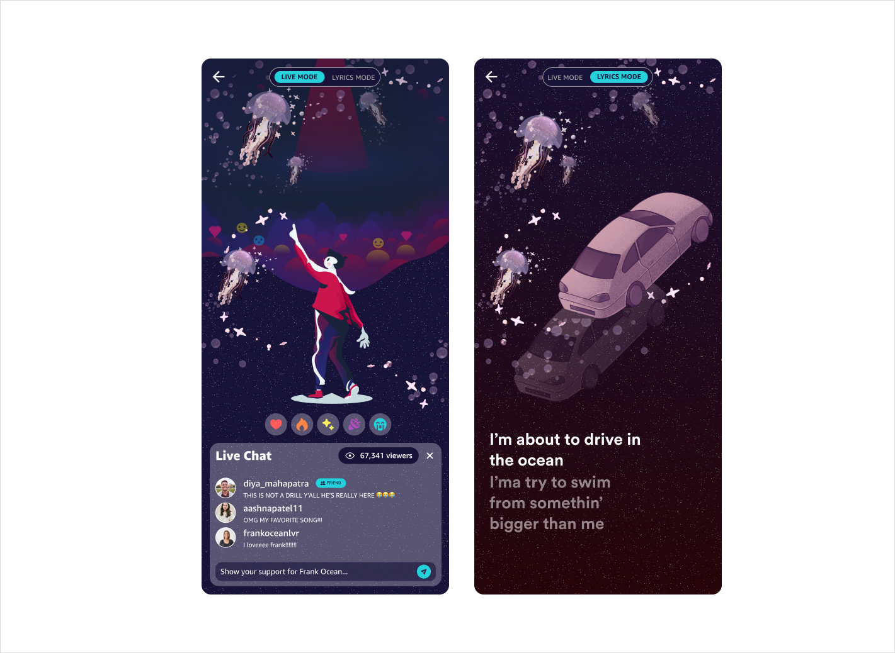

Turning Solo Streaming Into Shared Concert Experiences

In a single day, our team of 4 designed a social concert-discovery concept for Amazon Music, placing top 10 out of 100+ teams and presenting it directly to a panel of Amazon Music judges.
Jump to solutionRole
Product Designer
Timeline
1 Day (Designathon)
Team
4 Designers
Skills
Product Design
Rapid Research
Prototyping
Context
One day to rethink how listeners and artists connect.
For Amazon Music's one-day designathon, our team of 4 explored how the platform could create more meaningful interaction between listeners, artists, and the communities around them.
How We Worked
No individual lanes. We moved as one team.
With one day on the clock, we didn't split up by feature. All four of us moved through research synthesis, ideation, and design together, staying in sync so we could make decisions quickly.
The Problem
Amazon Music grew past streaming but the engagement didn't follow.
The platform now includes livestreams and creator tools, but these experiences remain fragmented. Listeners have no clear way to actively engage with creators, while creators have limited ways to build ongoing connections with their audience.

Research
The data showed a consumption platform, not a connection platform.
To ground the concept in real user needs, we combined sentiment analysis, market patterns, and firsthand listening behavior across listeners and creators.

Together, these findings pointed toward lightweight ways to turn passive listening into shared experiences.
58
of 61 respondents were listeners, giving us a strong signal into what music consumers valued most.
60+
poll selections favored year-end or monthly listening summaries, curated playlists, and offline access, while fewer than 15 went to livestream features.
100%
of creators surveyed prioritized playlist engagement metrics and collaborative playlist tools over follower counts.
Synthesis
We synthesized 100+ responses into four design directions.

After affinity mapping insights from listeners and creators, we identified 4 recurring themes around connection, discovery, and engagement that informed our core design directions.

The Solution
From passive stream to shared moment
Personalized Concert Discovery
Concert discovery was generic and had no connection to what someone actually listens to. We looked into surfacing upcoming concerts directly on the user's profile, personalized by listening history, with ticketing, a setlist preview, and attendance counts in one flow. This turned concert-going from a separate errand into an extension of the listening experience itself.

Friend Profile & Shared Artists
There was no way to see which concerts your friends actually cared about, or where your taste overlapped with theirs. So we decided to surface shared artists and friends' concert activity directly on profile pages. This made discovery social by default and you could see who around you was already excited about the same show and was attending so you could connect with them.

Live Concert Experience
We explored how artist-hosted virtual concerts could feel more participatory than a traditional livestream. Live Mode added real-time reactions and chat, while Lyrics Mode created a more focused listening experience — giving artists new ways to engage their audience and fans different ways to experience the same performance.

Testing
Would people actually use this?
We tested the Figma prototype with people outside our team and asked them to react honestly.
User 1
"I love the visuals!! they make the music feel alive, but I wish there was a way to customize them to match my mood or preferences. :D"
User 2
"The shared artist compatibility score is pretty cool maybe it'll be cooler if i can connect with fans attending the same concert."
User 3
"The live chat during concerts is engaging it gets overwhelming when too many messages flood in idk maybe add filters."
Outcome
We presented our concept to leading designers at Amazon Music.
Our team was selected as one of 10 finalists out of 100+ teams to present directly to a panel of Amazon Music designers. We walked them through our research, product thinking, and final concept, then received feedback on how the experience could evolve.
Reflection
What I took away from this designathon
I went into this thinking we'd need to invent new social features, but the strongest ideas came from things people already cared about like shared artists, concert plans, and listening habits.
Working within a one-day timeline also forced us to move quickly and prioritize. We focused on a few strong signals from users, aligned on what mattered most, and spent our time designing and prototyping around them.